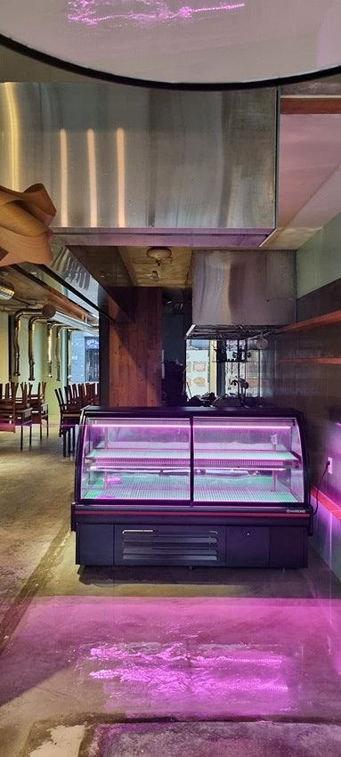
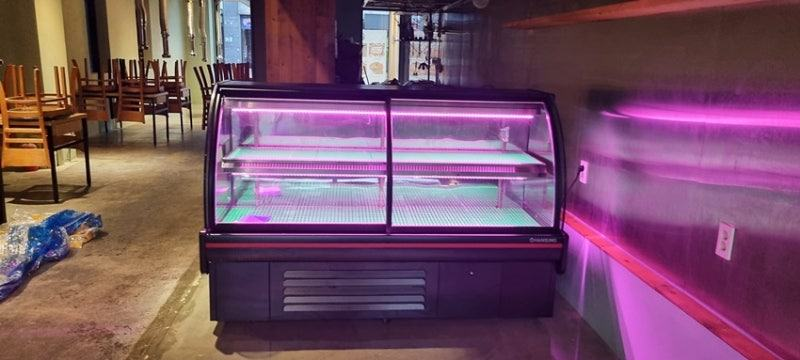
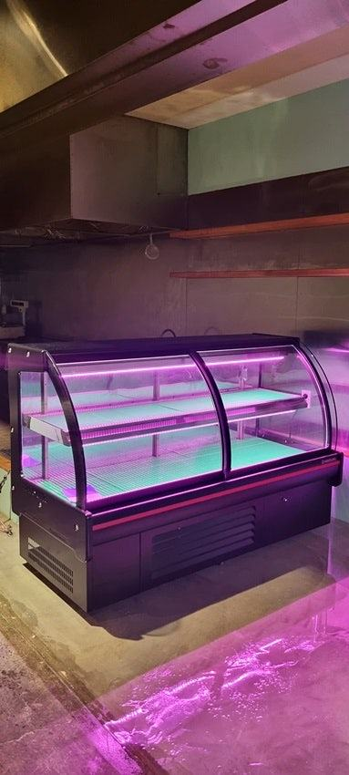
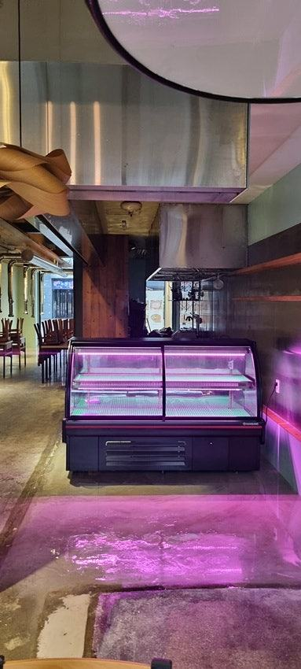
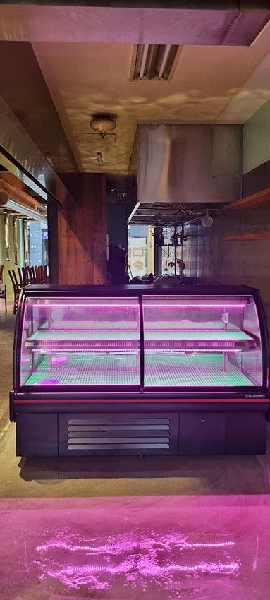
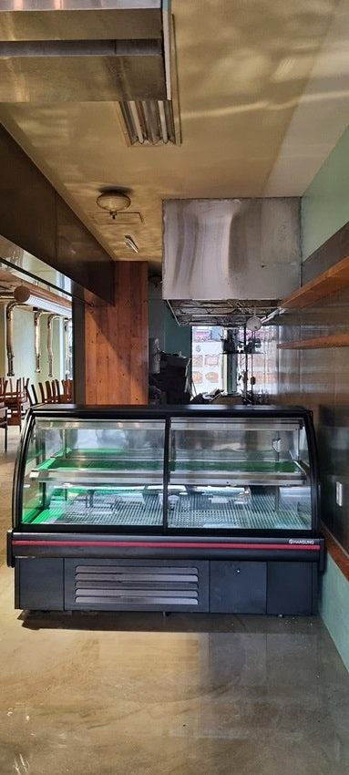
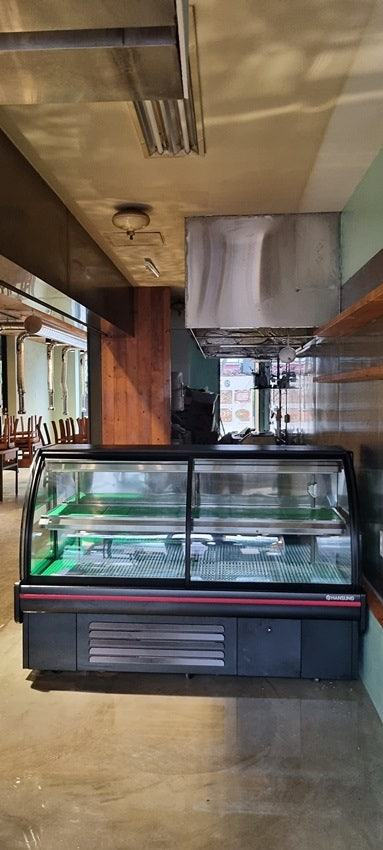
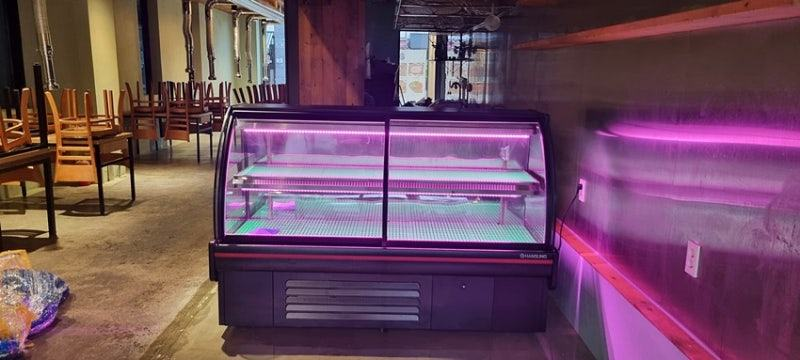
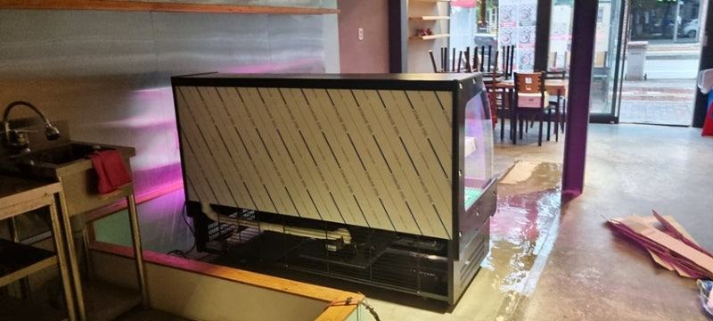
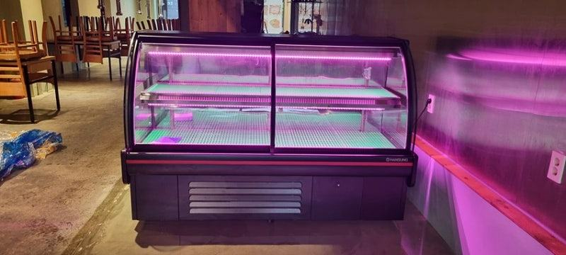

과일진열쇼케이스
과일쇼케이스 맞춤제작, 과일 매장이라서 따로 정할 것들

과일쇼케이스를 맞춤으로 만들 때는 매장 폭과 함께 주력 과일의 크기와 무르기, 박스째 진열할지 낱개로 보여 줄지를 먼저 정해야 단 깊이와 경사, 냉기 흐름을 제대로 잡을 수 있습니다. 여기에 과일 색을 살리는 조명과 상온 진열대와 이어지는 높이를 맞추면 매장 전체가 한 흐름으로 보입니다.
안녕하세요. 과일 매장에 맞춰 진열 냉장고를 설계하는 한성쇼케이스입니다.
과일가게 사장님들이 기성 냉장 쇼케이스를 쓰시다 맞춤제작을 문의하시는 이유는 대개 비슷합니다. 수박 반통은 칸에 안 들어가고, 딸기 팩은 깊은 선반 안쪽에 묻혀 안 보이고, 사과 박스는 통째로 올릴 자리가 없다는 거죠.
과일은 크기와 모양, 무르기가 제각각이라 음료나 반찬용으로 만든 선반 간격으로는 진열이 어색해지기 쉽습니다.
맞춤제작은 바로 이 부분을 매장 품목에 맞춰 바로잡는 작업입니다.
오늘은 과일쇼케이스를 맞춤으로 만들 때 과일 매장이라서 따로 정해야 하는 것들과, 상담부터 설치까지의 흐름을 정리해 드리겠습니다.
1. 주력 과일이 단 깊이와 경사를 정합니다
딸기, 체리, 블루베리처럼 작은 팩 과일은 얕고 앞으로 기울어진 단에 올려야 손님 눈에 잘 들어옵니다.
깊은 선반에 두면 뒤쪽 팩은 보이지 않고 앞쪽만 계속 팔려 재고가 뒤에서 무르기 쉽습니다.
수박 조각, 멜론, 선물용 바구니처럼 부피가 큰 상품은 단 간격을 넉넉히 잡아야 하고, 박스째 진열하는 사과·배는 박스 크기에 맞춘 깊이가 필요합니다.
그래서 상담 전에 주력 과일 목록과 대략의 포장 크기를 적어 두시면 설계가 빨라집니다.
과일은 계절마다 주력 품목이 바뀌니 선반 높이를 몇 단계로 옮길 수 있게 만들어 두면 여름 수박 철과 겨울 감귤 철에 진열을 다시 짜기가 수월합니다.
- 작은 팩 과일: 얕고 기울어진 단
- 큰 과일·바구니: 넉넉한 단 간격
- 박스 진열: 박스 크기에 맞춘 깊이
2. 무름을 줄이는 습도와 냉기 흐름
과일은 수확 뒤에도 호흡을 해서 수분이 너무 많으면 표면에 물이 맺혀 물러지고, 너무 건조하면 탄력과 윤기를 잃습니다.
맞춤으로 만들 때는 냉기가 과일에 직접 세게 닿지 않도록 송풍 방향과 칸 구성을 함께 정합니다.
무르기 쉬운 과일과 단단한 과일을 같은 칸에 두지 않도록 칸을 나누는 것도 맞춤제작에서 할 수 있는 일입니다.
잘라서 파는 컵과일을 함께 다룬다면 그 칸만 따로 관리할 수 있게 구성해 보세요.


3. 조명 색과 매장 속 위치
과일 매장은 색이 곧 신선함입니다. 과일 빛깔이 탁해 보이지 않는 조명 색을 고르고, 조명이 과일 바로 위에서 열을 주지 않도록 위치를 잡아야 합니다.
조명 색은 취급 품목을 보고 상담 때 함께 정합니다.
쇼케이스를 거리 쪽 창가에 둘지, 매장 안쪽 벽에 둘지도 중요합니다. 창가는 지나가는 손님 눈에 잘 띄지만 햇빛이 유리에 직접 닿으면 냉각 부담이 커집니다.
앞쪽 상온 진열대와 높이를 맞추면 매장이 하나로 이어져 보입니다.
4. 상담부터 설치까지 흐름
설치 자리 실측과 품목 목록을 받으면, 쇼케이스 전문 디자이너가 매장 분위기와 동선을 보고 구성을 제안합니다.
매장 인테리어 시안이 있다면 외관 색상까지 그 단계에서 맞춥니다.
디자인이 확정되면 공장에서 제작하고 설치까지 이어서 진행합니다. 과일은 명절 전후로 물량이 크게 늘어나니, 성수기 전에 설치를 마치고 시운전 기간을 두시도록 일정을 여유 있게 잡으시길 권합니다.
- 설치 자리 실측과 주력 품목 목록 준비
- 디자이너 제안안 확인
- 명절 성수기 전 설치 완료
체크리스트
- 주력 과일과 포장 크기
- 팩·박스·낱개 진열 비중
- 무르기 쉬운 과일 칸 분리
- 조명 색과 위치
- 창가 햇빛 여부
- 성수기 전 설치 일정
디자이너가 매장을 방문해 맞춘 숙성 냉장고 사례
업종은 다르지만 맞춤제작 과정을 잘 보여 주는 사례라 소개해 드립니다. 고깃집을 새로 여시는 대표님 의뢰로 만든 숙성 냉장고인데, 쇼케이스 전문 디자이너가 직접 매장을 찾아가 인테리어와 공간을 확인하며 상담했습니다.
손님이 신선한 상품을 직접 볼 수 있도록 눈에 띄는 자리에 두기로 했고, 인테리어에 어울리는 블랙 외관으로 마감했습니다.
공간을 나누는 역할까지 원하셔서 매장이 좁아 보이지 않도록 크기와 위치를 따져 제작했고, 조명은 업종에 맞춰 상담 후 정했습니다.









자주 묻는 질문
기성 과일쇼케이스와 맞춤제작은 무엇이 가장 다른가요?
가장 큰 차이는 단 깊이와 간격, 경사를 우리 매장 과일에 맞출 수 있다는 점입니다. 같은 크기라도 진열이 잘 보이는 정도가 달라집니다.
과일가게 맞춤제작 상담 때 무엇을 준비하면 될까요?
설치 자리의 폭·깊이·높이, 출입문 폭, 주력 과일 목록과 포장 크기를 알려 주세요. 매장 사진이 있으면 외관 색상과 조명까지 함께 제안해 드립니다.
명절 전에 설치하려면 언제 문의해야 하나요?
제작 기간은 구성과 그 시기 물량에 따라 달라 상담 때 정확히 안내해 드립니다. 성수기 직전에는 문의가 몰리니 가능한 한 일찍 실측 치수를 보내 주시는 게 좋습니다.
매장 조건에 맞춰 만드는 한성쇼케이스
원하시는 제품 사진과 설치할 공간 사진만 보내 주셔도 매장에 맞는 구성을 추천해 드립니다.
- 전국 240여 개 A/S 전담 센터 운영
- 본사 대량 자재 매입으로 품질 대비 합리적인 가격
- 유럽제·삼성 냉각 콤프레셔 적용
- 국내 최초 쇼케이스 전문 디자이너 상주
매장 폭과 원하는 진열 구성을 알려 주세요. 실측과 견적을 안내해 드립니다.
031-986-2458